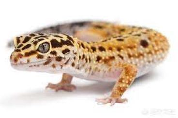
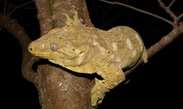

注意！
飼養前請評估資身消費能力並做好飼養功課。
墨西哥鈍口螈
墨西哥鈍口螈（Axolotl），學名為 *Ambystoma mexicanum*，是一種水生螈屬動物，原產於墨西哥的湖泊，如索奇米爾科湖（Lake Xochimilco）。它們有以下特點：
外型特徵：外鰓明顯，長在頭部兩側，看起來像羽毛；身體光滑，有各種顏色變異（如野生型黑褐色、白化型、金色等）。
特殊性質：具有終生幼體性（幼態持續），即使成年也保持水生型態，不會完全變為陸生。
生態特徵：肉食性，主要以小魚、昆蟲、蠕蟲為食。
壽命：在適當飼養環境下，壽命約10-15年。
1.飼養環境
水族箱：建議使用40公升以上的水族箱，避免空間過小。
水質：保持水溫在14-20°C，避免高於24°C（容易引起壓力或疾病）。使用除氯水或RO水，並定期測試水質（pH值保持在6.5-8之間）。
過濾設備：低流量過濾器是首選，避免過強的水流干擾活動。
底材：細沙或裸缸最佳，避免尖銳的石頭或沙礫，防止誤食傷害腸胃。
2. 飼料與飲食
主食：冷凍血蟲、蝦肉、蚯蚓或專用鈍口螈飼料。
餵食頻率：幼體每天餵食一次，成體2-3天一次，避免過度餵食。
3.行為與健康
行為特徵：性情溫和，對環境敏感，過度壓力可能導致健康問題。
疾病預防：觀察外鰓、皮膚狀況，若出現白斑或腐爛，可能是水質不良或感染問題。
4.其他注意事項
光線：喜歡微弱光線，避免直射陽光或強光。
伴侶飼養：建議單獨飼養或與大小相近的鈍口螈共養，避免吞食或攻擊行為。
清潔維護：每週更換部分水（20-30%），並清理底部殘餌與糞便。
墨西哥鈍口螈是容易照顧又具觀賞性的寵物，但需注意水質、水溫等細節以確保其健康與壽命。如果是新手飼主，建議多閱讀相關資料並準備好適當的設備再開始飼養！
黑棕疣螈
黑棕疣螈（Ichthyosaura alpestris cyreni），是一種生活在歐洲的蠑螈，屬於阿爾卑斯蠑螈的亞種。它們以耐寒、適應性強而著稱，以下是其主要特徵：
外型特徵：身體呈黑褐色，腹部鮮橙紅色，背部有黑色斑點。雄性在繁殖季會長出藍色光澤和明顯背脊。
生態特徵：棲息在冷水溪流、湖泊附近或森林中，夏季水中活動，冬季則會在陸地上冬眠。
壽命：野外壽命約10年，飼養條件下可達15年。
1.飼養環境
水陸結合缸：提供水域和陸地區域，模擬自然棲息地。水深約10-20公分，水族箱建議30公升以上。
溫度：適宜水溫為15-20°C，避免高於25°C（容易造成壓力）。
水質：保持乾淨，使用除氯水，並定期更換水。pH值在6.5-7.5之間為佳。
遮蔽處：在水中和陸地區域提供躲藏物，如石洞、浮木或水草。
2.飲食
主食：活食如蚯蚓、小型無脊椎動物（如紅蟲、蠅蛆）。
補充：可搭配冷凍血蟲、顆粒飼料，但要確保適合兩棲類。
餵食頻率：幼體每天餵食一次，成體每2-3天餵一次，餵食後移除殘餌以免污染水質。
3.健康與行為
行為觀察：性情溫和，通常喜歡安靜環境，若出現皮膚發白或腐爛，需立即檢查水質或是否有感染。
疾病預防：注意水溫、濕度，並觀察皮膚和活動狀況。
幼體照護：孵化後的幼體需單獨飼養，餵食浮游生物或小型活餌。
黑棕疣螈是一種適合初學者的兩棲類寵物，對環境的耐受力較強，但仍需細心照料以確保健康。如果是飼養新手，建議逐步學習並提供模擬自然的環境！
豹紋守宮

豹紋守宮（Eublepharis maularius），文物豹紋壁虎，是原產於南亞沙漠和乾燥地區的豹紋蜥蜴，具有獨特的體色和容易飼養而成為受歡迎的寵物。
外型特徵：身體覆蓋斑點或條紋，常見的顏色為黃色、橙色、棕色和白色，還有許多人工培育的顏色產品系（如白色、橙色斑）。
生態特徵：夜行性動物，性情溫和，喜歡獨居，依靠尾巴儲存脂肪。
飼養：飼養條件良好時可活15-20年。
飼養環境
飼養箱：建議採用玻璃或塑膠爬蟲箱，尺寸至少45×30×30公分，需有通風設計。
底材：使用紙巾、爬蟲地墊或細沙，避免細小顆粒（如砂土）造成誤食危險。
躲藏處：至少提供兩個躲藏洞（溫區與冷區），還需一個乾燥躲藏洞來協助脫皮。
溫度與濕度： 日間溫度：32-35°C（熱區），24-27°C（冷區）。
夜間溫度：20-24°C。
使用加熱燈或加熱墊維持溫度，濕度維持在30-40%。
飲食
主食：活體昆蟲，如蟋蟀、杜比亞蟑螂、麥皮蟲或黃粉蟲。
補充：每週餵食含鈣粉和維生素D3的昆蟲2-3次，也有助於性骨病變。
餵食頻率：幼體每天餵食，成體每2-3天餵食一次，觀察體態調整份量。
健康與行為
脫皮：定期觀察脫皮狀況，若有禿頭皮膚（特別是禿頭處），可使用濕棉棒輕輕擦拭協助。
特徵行為：性情溫順，習慣被馴化，但避免抓握。
健康觀察：注意尾跡是否、活動力是否正常，異常如拒食、腹部肥胖需及時檢查。
清潔與維護
糞便清理：每日清理糞便，避免細菌滋生。
全面清潔：每月徹底清潔飼養箱，使用安全的爬蟲專用消毒劑。
紋守宮是新手飼主的理想選擇，其低需求和耐受性讓人輕鬆上手，但仍需注意溫度、飲食和清潔，才能確保他們健康長壽！
肥尾守宮

肥尾守宮（Hemitheconyx caudicinctus），別名非洲肥尾壁虎，是原產於西非乾燥地區的一種陸生蜥蜴，外部肥胖的尾巴與溫和的性情而深受喜愛。
外型特徵：體圓潤，尾部粗大儲存脂肪，常見的體色為棕色和淺橙色，標有條紋或螢光。
生態特徵：夜行性，生活於乾燥草原或半沙漠地區，主要從事地面活動。
飼養：飼養條件良好時可活15-20年。
飼養環境
飼養箱：建議採用玻璃或塑膠爬蟲箱，尺寸至少45×30×30公分，需有通風設計。
底材：使用紙巾、爬蟲地墊或細沙，避免細小顆粒（如砂土）造成誤食危險。
躲藏處：至少提供兩個躲藏洞（溫區與冷區），還需一個乾燥躲藏洞來協助脫皮。
溫度與濕度： 日間溫度：30-32°C（熱區），22-25°C（冷區）
夜間溫度：20-22°C。
使用加熱燈或加熱墊維持溫度，濕度維持在50-60%。
飲食
主食：活體昆蟲，如蟋蟀、杜比亞蟑螂、麥皮蟲或黃粉蟲。
補充：每週餵食含鈣粉和維生素D3的昆蟲2-3次，也有助於性骨病變。
餵食頻率：幼體每天餵食，成體每2-3天餵食一次，觀察體態調整份量。
健康與行為
脫皮：定期檢查脫皮情況，若有殘留（特別是在襪子和尾巴上），可用濕棉棒輕輕協助。
特徵行為：溫和易馴服，但避免間隙幹擾，造成壓力。
健康觀察：注意尾跡是否、活動力是否正常，異常如拒食、腹部肥胖需及時檢查。
清潔與維護
糞便清理：每日清理糞便，避免細菌滋生。
全面清潔：每月徹底清潔飼養箱，使用安全的爬蟲專用消毒劑。
巨人守宮

巨人守宮（Rhacodactylus leachianus），是世界上體型最大的壁虎，原產於新喀裡多尼亞島之一，喜歡棲息在熱帶雨林的樹洞中。
外型特徵：體型厚實，皮膚有粗糙的紋理，顏色多為綠灰色、褐色，帶有斑點或條紋。
生態特徵：夜行性，樹棲，性情溫和但略帶領域性。
飼養：飼養條件下可活15-20年或更長
飼養環境
飼養箱：建議使用垂直玻璃爬蟲箱，尺寸至少為60×45×90公分，提供攀爬空間。
底材：使用椰土、樹皮或苔蘚，模擬森林環境，有助於保持濕度。
躲藏處：提供支架、藤條、樹洞和躲藏處，模擬自然棲息地。
溫度與濕度： 日間溫度：日間24-27°C，夜間可降至20°C左右。
夜間溫度：維持在60-80%，每天用噴霧器增加濕度，但避免過度造成黴菌滋生。
使用加熱燈或加熱墊維持溫度，濕度維持在50-60%。
飲食
主食：果泥、商業守宮膏狀飼料（Crested Gecko Diet），搭配昆蟲如蟋蟀或杜比亞蟑螂。
補充：定期在食物中添加鈣粉和維生素D3，以保持健康。
餵食頻率：幼體每2天餵一次，成體每3-4天餵一次，觀察食量調整。
健康與行為
脫皮：脫皮時需提供高濕度環境，避免殘留皮膚在手指或尾巴上。
特徵行為：巨人守宮性情緒敏感，但有時具有領域性，飼養時需密切配合，避免打架。
健康觀察：注意皮膚、體重和活動力，若出現拒食、異常掉皮或腫脹，需檢查環境或就醫。
清潔與維護
糞便清理：每日清理糞便，避免細菌滋生。
全面清潔：每月徹底清潔飼養箱，使用安全的爬蟲專用消毒劑。
藍舌蜥

藍舌蜥（Tiliqua spp.），是一種中大型的陸生蜥蜴，原產於澳洲和印尼的乾燥森林、草原和灌木叢。它們因為擁有明顯的藍色舌頭而得名，這種特徵常用來威嚇天敵。
外型特徵：身體圓潤，四肢短小，背部多為棕色、灰色或橙色，帶有條紋或斑點。藍舌蜥全長可達40-60公分。
生態特徵：性情溫和，晝行性，喜歡在地面活動，但需要躲藏處。
飼養：飼養條件下可活15-20年。
飼養環境
飼養箱：建議使用120×60×45公分的寬型爬蟲箱，以提供充足的活動空間。
底材：可選用椰土、爬蟲地墊或碎樹皮，需保持清潔並方便挖掘。
躲藏處：提供躲藏洞、石塊和木頭模擬自然環境。
溫度與濕度： 日間溫度：日間熱區32-35°C，冷區25-28°C。
夜間溫度：夜間降至22-25°C。使用加熱燈或陶瓷燈保持溫度。
濕度：保持40-60%，視品種需求略有不同，每週噴霧1-2次以模擬自然環境。
飲食
主食：雜食性，可餵食昆蟲（如蟋蟀、杜比亞蟑螂）、煮熟的雞蛋、瘦肉、狗糧或貓糧（選擇高品質品牌）。
蔬果：搭配切碎的蔬菜（如胡蘿蔔、綠葉菜）與水果（如木瓜、香蕉）。
補充：定期添加鈣粉和維生素，特別是鈣+D3，有助於骨骼健康。
餵食頻率：幼體每天餵食，成體每2-3天餵一次，觀察食量調整。
健康與行為
性情：藍舌蜥溫和易馴化，適合新手，但避免頻繁打擾或過度抓握。
脫皮：脫皮不完全時，可在濕度較高的環境中幫助完成。
健康觀察：定期檢查體重、皮膚、眼睛和排泄物，若出現食慾減退或活動力下降需及時檢查環境或就醫。
清潔與維護
糞便清理：每天清理排泄物和食物殘渣，避免細菌滋生
全面清潔：每月徹底清潔飼養箱，並更換底材，確保乾淨。
泰加巨蜥

泰加巨蜥（Varanus salvator），又稱水巨蜥，原產於東南亞的沼澤地帶、河流和森林，是一種體型龐大、行為多樣的蜥蜴，因其耐性強且外型威武，吸引許多爬蟲飼養者。
外型特徵：成體體長可達1.5-2.5公尺，體色多為黑褐色，身上帶有黃色斑點或條紋，尾巴長而有力，適合游泳。
生態特徵：晝行性，善於爬樹和游泳，屬於肉食性蜥蜴，行為聰明且具侵略性。
飼養：飼養條件下可活15-20年。
飼養環境
飼養箱：成體需超大飼養空間，至少250×150×150公分，模擬自然環境，並提供足夠的活動空間。
底材：使用椰土、沙土混合物或樹皮，需保持一定濕度，並方便挖掘。
設備：提供堅固的躲藏洞、大型水池（足以讓其完全浸入）和攀爬樹幹。
溫度與濕度： 日間溫度：日間熱區35-38°C，冷區25-28°C。
夜間溫度：夜間降至22-25°C
濕度：保持50-70%，每天噴霧1-2次，並定期更換水池水源。
飲食
主食：肉食性，可餵食鼠類、雞肉、小鳥、魚、昆蟲（如蟋蟀、杜比亞蟑螂）等，需切成適合大小。
補充：偶爾提供雞蛋或內臟，但避免過量，避免引起維生素A中毒。
餵食頻率：幼體每天餵食一次，成體每2-3天餵一次，根據體型和活動量調整食量。
注意：避免長期餵食高脂肪或單一食物，確保均衡飲食。
健康與行為
性情：泰加巨蜥通常具領域性，需耐心馴養，避免突然接觸或過度刺激，以免攻擊。
脫皮：脫皮不完全時，可增加濕度，並用溫水幫助清理殘留皮膚。
健康觀察：注意皮膚、食慾和活動力，若有呼吸困難、體重減輕或傷口感染，需及時就醫。
清潔與維護
日常清理：每天清理排泄物和食物殘渣，並更換水池中的水。
全面清潔：每月進行飼養箱的徹底清潔，並消毒所有設施。
飼養建議
泰加巨蜥因其龐大的體型和特殊需求，適合有豐富經驗的爬蟲飼主。它們需要充足的空間和高質量的飲食維護，並需要耐心和時間來建立信任。妥善飼養能讓泰加巨蜥成為令人印象深刻且具有互動性的伴侶動物！